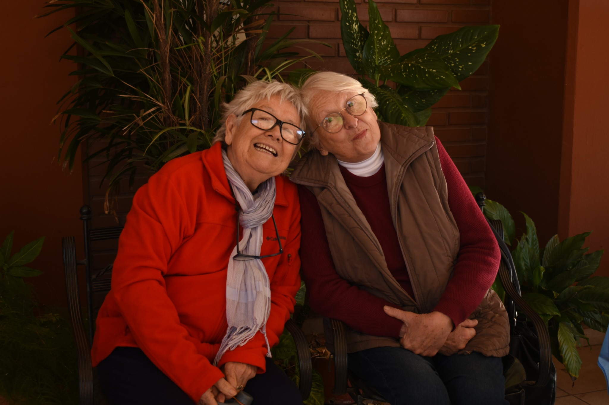
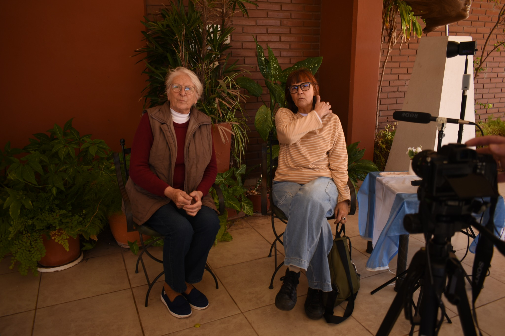
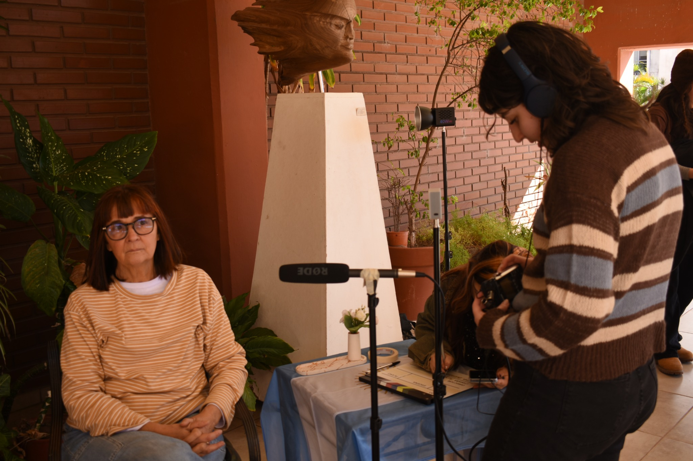

La vida antes
Infancias, estudios, trabajos, amistades y los caminos que las acercaron a la participación política y social.
Próximamente · Ver entrevista →Las historias de las mujeres que resistieron en el Chaco siguen vivas. Recuperarlas es reconocer sus luchas, sus ideas y las huellas que dejaron en nuestro presente.
Este proyecto nace de la necesidad de recuperar, preservar y visibilizar los testimonios de las mujeres del Chaco que lucharon por sus ideales y soñaron con un mundo más justo y humano.
Durante el terrorismo de Estado, muchas fueron perseguidas, silenciadas y violentadas. Vivieron una doble opresión: por sus convicciones políticas y por su condición de mujeres.
Queremos construir una memoria situada, que reconozca sus experiencias, sus formas de organización, sus vínculos y sus proyectos colectivos en el territorio chaqueño.
Testimonios en primera persona para acercarnos a las experiencias, decisiones y formas de resistencia de las protagonistas.
Infancias, estudios, trabajos, amistades y los caminos que las acercaron a la participación política y social.
Próximamente · Ver entrevista →Los espacios compartidos, las redes de solidaridad y las convicciones que sostuvieron sus luchas.
Próximamente · Ver entrevista →Lo que desean transmitir a las nuevas generaciones y las huellas que siguen vivas hoy.
Próximamente · Ver entrevista →Cada historia abre una puerta para comprender una época desde las voces y experiencias de sus protagonistas. Esta sección podrá crecer con cada nuevo testimonio.
Convicciones, debates y sueños de transformación social.
Contenido editorial por incorporarBarrios, organizaciones, espacios de encuentro y solidaridad.
Contenido editorial por incorporarLa memoria como herencia colectiva y construcción cotidiana.
Contenido editorial por incorporarFotografías de archivo, documentos y registros de los encuentros. Cada imagen debe incluir su fecha, procedencia y descripción cuando esos datos estén disponibles.



Un trabajo colectivo de investigación, escucha, registro y comunicación para mantener viva la memoria.
Maquetador web
Motion graphics
Entrevistador
Un breve recorrido interactivo para poner a prueba lo que sabemos y descubrir por qué la memoria también se construye entre generaciones.
¿Querés compartir una reflexión, acercar información, proponer un encuentro o ponerte en contacto con el equipo? Escribinos.